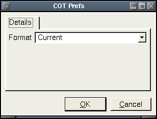

COT Plugin
Description:
Downloads and updates the commitment of traders reports for the
major
US futures exchanges. Option data is not used.
Input Parameters:
- Format - Current will only download the latest COT report.
History will download the current years data.
